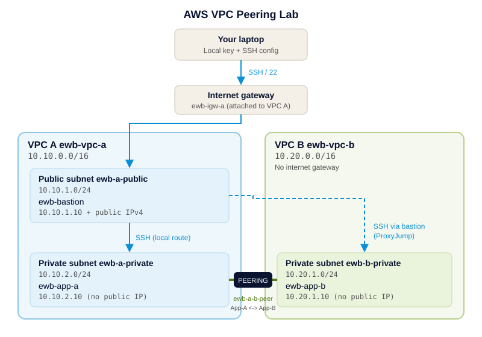

A bastion host, explicit route tables and tightly scoped security groups prove that App-A and App-B can talk over private IPs. Built by hand in the console first, then written in Terraform.
Peering alone doesn’t make a ping work. Switch the two settings on the right and watch which one breaks it.
Illustrative output for the lab’s logic. Capture your own real output for the evidence folder.
Administration goes laptop, bastion, then App-A or App-B over SSH ProxyJump. Project traffic goes App-A to App-B over private IPs through the peering connection.

10.10.0.0/16 and 10.20.0.0/16.10.20.0.0/16 peering route. ProxyJump makes the bastion open the connection to App-B, and the more specific route wins over 0.0.0.0/0.| Resource | Location | CIDR / address |
|---|---|---|
| ewb-vpc-a | VPC A | 10.10.0.0/16 |
| ewb-a-public | VPC A, public | 10.10.1.0/24 |
| ewb-a-private | VPC A, private | 10.10.2.0/24 |
| ewb-vpc-b | VPC B | 10.20.0.0/16 |
| ewb-b-private | VPC B, private | 10.20.1.0/24 |
| ewb-bastion | ewb-a-public | 10.10.1.10 + public IPv4 |
| ewb-app-a | ewb-a-private | 10.10.2.10 (no public IP) |
| ewb-app-b | ewb-b-private | 10.20.1.10 (no public IP) |
| Destination | Target |
|---|---|
| 10.10.0.0/16 | local |
| 0.0.0.0/0 | igw |
| 10.20.0.0/16 | pcx |
| Destination | Target |
|---|---|
| 10.10.0.0/16 | local |
| 10.20.0.0/16 | pcx |
| Destination | Target |
|---|---|
| 10.20.0.0/16 | local |
| 10.10.0.0/16 | pcx |
| Security group | Type / port | Source |
|---|---|---|
| ewb-sg-bastion | SSH / TCP 22 | your public IP /32 |
| ewb-sg-app-a | SSH / TCP 22 | 10.10.1.10/32 |
| ewb-sg-app-a | ICMP echo request | 10.20.1.10/32 |
| ewb-sg-app-b | SSH / TCP 22 | 10.10.1.10/32 |
| ewb-sg-app-b | ICMP echo request | 10.10.2.10/32 |
Record real output for every test and label each screenshot with host, test and result.
| # | Test | Where / command | Expected |
|---|---|---|---|
| 01 | Baseline (no peering) | App-A: ping -c 4 10.20.1.10 | No replies |
| 02 | Forward path | App-A: ping -c 4 10.20.1.10 | 4 replies, 0% loss |
| 03 | Reverse path | App-B: ping -c 4 10.10.2.10 | 4 replies, 0% loss |
| 04 | Private SSH | Laptop: ssh ewb-app-b | Shell on App-B via bastion |
| 05 | Isolation | EC2 console | No public IPv4 on App-A / App-B |
| 06 | Controlled failure | Remove App-B ICMP rule, ping from App-A | Replies stop, then resume after restore |
Needs Terraform 1.5 or later, AWS credentials for a lab account, and an existing EC2 key pair named ewb-lab.
cd terraform cp terraform.tfvars.example terraform.tfvars # edit: name, your IP /32 terraform init terraform plan terraform apply
# Baseline (test 01) terraform apply -var enable_peering=false # Connect the VPCs (tests 02-05) terraform apply -var enable_peering=true # Controlled failure (test 06) terraform apply -var enable_app_b_icmp_rule=false terraform apply -var enable_app_b_icmp_rule=true
Host ewb-bastion
HostName BASTION_PUBLIC_IP
User ec2-user
IdentityFile ~/.ssh/ewb-lab.pem
IdentitiesOnly yes
Host ewb-app-a
HostName 10.10.2.10
ProxyJump ewb-bastion
# same User / IdentityFile as above
Host ewb-app-b
HostName 10.20.1.10
ProxyJump ewb-bastion
# same User / IdentityFile as above
Run terraform destroy, then check the console (filter by tag Project = EWB-VPC-Peering) for leftover instances, volumes, public IPv4 addresses or VPC resources. EC2, EBS and public IPv4 can incur charges.